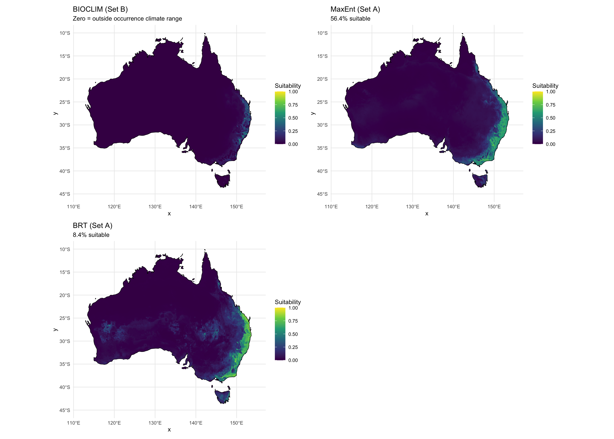

library(tidyverse)
library(terra)
library(sf)
library(rnaturalearth)
library(rnaturalearthdata)
library(dismo)
library(patchwork)Step 05d: BIOCLIM Model
Dermacentor variabilis Species Distribution Model
Overview
This script fits a BIOCLIM model as a third, independent SDM method. BIOCLIM uses only occurrence data — no background points, no algorithm-specific fitting. It defines suitability as the minimum percentile position of a location within the species’ observed climate envelope: a location must fall within the occurrence range for ALL variables to receive a non-zero score.
Key properties: - No extrapolation: novel climate conditions automatically receive score = 0 - No background points: not affected by target-group bias or background choices - Deterministic: no stochastic fitting, always produces the same result - Conservative: only predicts suitable where ALL variables are within occurrence range
Interpretation: BIOCLIM will give zero suitability at Innisfail (tropical Queensland) because tropical conditions are outside the training climate envelope. This directly confirms that the tropical training gap is inherent to the method — not an artifact of MaxEnt or BRT parameterisation. The BIOCLIM result thus provides a useful floor estimate (minimum confidence area) and validates the CLIMEX re-implementation as the appropriate method for tropical extrapolation.
1. Load data
base_dir <- "~/Library/CloudStorage/OneDrive-CSIRO/OneDrive - Docs/01_Projects/SDM/Dvariabilis_SDM"
processed_dir <- file.path(base_dir, "processed_data")
figures_dir <- file.path(base_dir, "figures")
# Environmental stacks
env_stack_aus <- rast(file.path(processed_dir, "env_stack_aus.tif"))
env_stack_M <- rast(file.path(processed_dir, "env_stack_M.tif"))
# Occurrence data
occ <- readRDS(file.path(processed_dir, "occurrences_thinned.rds"))
occ_env <- readRDS(file.path(processed_dir, "occurrences_with_env.rds"))
# Variable sets
set_B <- readLines(file.path(processed_dir, "selected_variables_setB.txt"))
# SDM thresholds and predictions for comparison
thresholds <- readRDS(file.path(processed_dir, "model_thresholds.rds"))
pred_maxent_A <- rast(file.path(processed_dir, "pred_aus_maxent.tif"))
pred_brt_A <- rast(file.path(processed_dir, "pred_aus_brt.tif"))
# Australia boundary
aus <- ne_countries(country = "Australia", scale = "medium", returnclass = "sf")
cat("Set B variables:", paste(set_B, collapse = ", "), "\n")
cat("Occurrences:", nrow(occ), "\n")Set B variables: aridity_idx, bio12, bio15, bio7
Occurrences: 4580 2. Prepare occurrence climate data
# Extract Set B environmental values at occurrence points
occ_climate_B <- occ_env %>%
dplyr::select(all_of(set_B)) %>%
na.omit()
cat("Occurrence climate data (Set B):\n")
summary(occ_climate_B)
cat(sprintf("\nN = %d occurrence records with complete Set B climate data\n",
nrow(occ_climate_B)))Occurrence climate data (Set B):
aridity_idx bio12 bio15 bio7
Min. : 0.00 Min. : 6.937 Min. :20.90 Min. : 5.606
1st Qu.:26.90 1st Qu.:11.053 1st Qu.:26.77 1st Qu.:13.584
Median :30.92 Median :11.754 Median :28.74 Median :19.223
Mean :31.90 Mean :11.719 Mean :28.88 Mean :26.295
3rd Qu.:35.56 3rd Qu.:12.525 3rd Qu.:30.92 3rd Qu.:37.288
Max. :74.30 Max. :17.448 Max. :37.53 Max. :78.398
N = 4580 occurrence records with complete Set B climate data3. Fit BIOCLIM model
# Convert to raster stack for dismo (requires RasterStack)
env_aus_B_terra <- env_stack_aus[[set_B]]
env_aus_B_raster <- raster::stack(env_aus_B_terra)
# BIOCLIM requires the training data in a 2-column lon/lat format
# Extract coordinates and climate of occurrences
# dismo::bioclim() takes a matrix of training predictors
bc_model <- bioclim(as.matrix(occ_climate_B))
cat("BIOCLIM model fitted.\n")
cat("Model summary:\n")
print(bc_model)BIOCLIM model fitted.
Model summary:
class : Bioclim
variables: aridity_idx bio12 bio15 bio7
presence points: 4580
aridity_idx bio12 bio15 bio7
1 34.75 10.098333 26.592 28.59760
2 36.77 10.619333 26.080 15.79451
3 27.07 11.338333 28.924 37.42966
4 41.23 9.402666 23.884 20.82534
5 38.07 10.175000 24.892 17.68912
6 32.99 8.983000 26.488 14.10189
7 35.84 9.772667 25.304 15.45734
8 33.29 9.983000 26.400 16.50829
9 27.81 13.548000 29.316 12.14523
10 28.07 13.302334 29.660 12.63058
(... ... ...)4. Project BIOCLIM to Australia
pred_bioclim_aus <- predict(env_aus_B_raster, bc_model)
pred_bioclim_terra <- rast(pred_bioclim_aus)
names(pred_bioclim_terra) <- "bioclim_suitability"
cat("BIOCLIM projected to Australia.\n")
cat("Prediction range:", round(range(values(pred_bioclim_terra), na.rm = TRUE), 3), "\n")
# Area at various thresholds
cell_areas <- cellSize(pred_bioclim_terra, unit = "km")
aus_total_area <- sum(values(cell_areas * !is.na(pred_bioclim_terra)), na.rm = TRUE)
for (thr in c(0, 0.1, 0.2, 0.3, 0.5)) {
area <- sum(values(cell_areas * (pred_bioclim_terra > thr)), na.rm = TRUE)
cat(sprintf(" BIOCLIM > %.1f: %9.0f km² (%.1f%%)\n",
thr, area, 100 * area / aus_total_area))
}BIOCLIM projected to Australia.
Prediction range: 0 0.654
BIOCLIM > 0.0: 1410248 km² (18.2%)
BIOCLIM > 0.1: 193469 km² (2.5%)
BIOCLIM > 0.2: 94880 km² (1.2%)
BIOCLIM > 0.3: 48841 km² (0.6%)
BIOCLIM > 0.5: 2842 km² (0.0%)5. Validation at CLIMEX reference locations
ref_locs <- tibble(
city = c("Innisfail", "Lismore", "Sydney", "Melbourne",
"Brisbane", "Cairns", "Darwin", "Alice Springs", "Hobart"),
lon = c(146.03, 153.28, 151.21, 144.96,
153.03, 145.77, 130.84, 133.88, 147.33),
lat = c(-17.53, -28.81, -33.87, -37.81,
-27.47, -16.92, -12.46, -23.70, -42.88),
climex_EI = c(63, 43, NA, NA, NA, NA, NA, NA, NA),
climex_note = c("Highest EI", "~ Little Rock AR", "", "", "", "Tropical",
"Tropical monsoon", "Arid", "Cool temperate")
)
ref_pts <- vect(ref_locs, geom = c("lon", "lat"), crs = "EPSG:4326")
ref_locs$bioclim <- extract(pred_bioclim_terra, ref_pts)[, 2]
ref_locs$maxent_A <- extract(pred_maxent_A, ref_pts)[, 2]
ref_locs$brt_A <- extract(pred_brt_A, ref_pts)[, 2]
cat("Reference location predictions — all models:\n")
ref_locs %>%
mutate(across(c(bioclim, maxent_A, brt_A), ~round(., 3))) %>%
print(n = Inf)
cat("\nKey observation:\n")
innisfail_bc <- ref_locs %>% filter(city == "Innisfail") %>% pull(bioclim)
cat(sprintf(" Innisfail BIOCLIM = %.3f — ", innisfail_bc))
if (!is.na(innisfail_bc) && innisfail_bc == 0) {
cat("zero suitability confirms tropical training gap is method-independent\n")
} else if (!is.na(innisfail_bc) && innisfail_bc > 0) {
cat("some suitability predicted (review)\n")
} else {
cat("NA (outside model extent)\n")
}Reference location predictions — all models:
# A tibble: 9 × 8
city lon lat climex_EI climex_note bioclim maxent_A brt_A
<chr> <dbl> <dbl> <dbl> <chr> <dbl> <dbl> <dbl>
1 Innisfail 146. -17.5 63 "Highest EI" 0.003 0.239 0.086
2 Lismore 153. -28.8 43 "~ Little Rock AR" 0.369 0.555 0.745
3 Sydney 151. -33.9 NA "" 0.003 0.446 0.26
4 Melbourne 145. -37.8 NA "" 0.074 0.489 0.451
5 Brisbane 153. -27.5 NA "" 0.251 0.568 0.806
6 Cairns 146. -16.9 NA "Tropical" 0 0.114 0.011
7 Darwin 131. -12.5 NA "Tropical monsoon" NA NA NA
8 Alice Springs 134. -23.7 NA "Arid" 0 0.031 0.074
9 Hobart 147. -42.9 NA "Cool temperate" 0.002 0.173 0.22
Key observation:
Innisfail BIOCLIM = 0.003 — some suitability predicted (review)6. MESS check for BIOCLIM predictions
# BIOCLIM by definition gives 0 for cells outside the training envelope.
# Check what fraction of BIOCLIM > 0 cells are within training range for all vars.
# This provides a direct measure of how conservative BIOCLIM is vs MaxEnt.
# The BIOCLIM prediction > 0 region is the "within-envelope" area.
bioclim_positive_area <- sum(values(cell_areas * (pred_bioclim_terra > 0)), na.rm = TRUE)
cat(sprintf("BIOCLIM > 0 area: %.0f km² (%.1f%% of Australia)\n",
bioclim_positive_area, 100 * bioclim_positive_area / aus_total_area))
cat("This is the area where ALL Set B variables fall within the occurrence range.\n")
cat("It represents a minimum-confidence suitability estimate.\n")BIOCLIM > 0 area: 1410248 km² (18.2% of Australia)
This is the area where ALL Set B variables fall within the occurrence range.
It represents a minimum-confidence suitability estimate.7. Maps
bc_df <- as.data.frame(pred_bioclim_terra, xy = TRUE, na.rm = TRUE)
me_df <- as.data.frame(pred_maxent_A, xy = TRUE, na.rm = TRUE)
br_df <- as.data.frame(pred_brt_A, xy = TRUE, na.rm = TRUE)
names(me_df)[3] <- "suitability"
names(br_df)[3] <- "suitability"
# Combined panel map
p_bc <- ggplot() +
geom_raster(data = bc_df, aes(x = x, y = y, fill = bioclim_suitability)) +
geom_sf(data = aus, fill = NA, colour = "black", linewidth = 0.3) +
scale_fill_viridis_c(name = "Suitability", option = "viridis",
limits = c(0, 1), na.value = "grey95") +
labs(title = "BIOCLIM (Set B)",
subtitle = "Zero = outside occurrence climate range") +
theme_minimal(base_size = 10) +
coord_sf(xlim = c(112, 155), ylim = c(-45, -10))
p_me <- ggplot() +
geom_raster(data = me_df, aes(x = x, y = y, fill = suitability)) +
geom_sf(data = aus, fill = NA, colour = "black", linewidth = 0.3) +
scale_fill_viridis_c(name = "Suitability", option = "viridis",
limits = c(0, 1), na.value = "grey95") +
labs(title = "MaxEnt (Set A)",
subtitle = "56.4% suitable") +
theme_minimal(base_size = 10) +
coord_sf(xlim = c(112, 155), ylim = c(-45, -10))
p_br <- ggplot() +
geom_raster(data = br_df, aes(x = x, y = y, fill = suitability)) +
geom_sf(data = aus, fill = NA, colour = "black", linewidth = 0.3) +
scale_fill_viridis_c(name = "Suitability", option = "viridis",
limits = c(0, 1), na.value = "grey95") +
labs(title = "BRT (Set A)",
subtitle = "8.4% suitable") +
theme_minimal(base_size = 10) +
coord_sf(xlim = c(112, 155), ylim = c(-45, -10))
p_combined <- p_bc + p_me + p_br + plot_layout(ncol = 2)
print(p_combined)
ggsave(file.path(figures_dir, "05d_bioclim_comparison.png"),
p_combined, width = 14, height = 10, dpi = 300)8. Save outputs
writeRaster(pred_bioclim_terra,
file.path(processed_dir, "pred_aus_bioclim.tif"),
overwrite = TRUE)
write_csv(ref_locs, file.path(processed_dir, "bioclim_reference_locations.csv"))
cat("======================================================\n")
cat(" BIOCLIM MODEL SUMMARY\n")
cat("======================================================\n\n")
cat(sprintf("Method: BIOCLIM (dismo::bioclim)\n"))
cat(sprintf("Variables: Set B — %s\n\n", paste(set_B, collapse = ", ")))
cat("Area estimates:\n")
for (thr in c(0, 0.1, 0.2, 0.3)) {
area <- sum(values(cell_areas * (pred_bioclim_terra > thr)), na.rm = TRUE)
cat(sprintf(" > %.1f: %9.0f km² (%.1f%%)\n", thr, area,
100 * area / aus_total_area))
}
cat("\nComparison interpretation:\n")
cat("BIOCLIM gives the most conservative estimate — it predicts where the\n")
cat("Australian climate falls strictly within the North American occurrence envelope.\n")
cat("Zero suitability at Innisfail confirms that tropical/subtropical zones cannot\n")
cat("be reliably predicted by ANY correlative SDM — this is a fundamental\n")
cat("limitation requiring the CLIMEX physiological approach (05e).\n")
sprintf("Saved BIOCLIM outputs")======================================================
BIOCLIM MODEL SUMMARY
======================================================
Method: BIOCLIM (dismo::bioclim)
Variables: Set B — aridity_idx, bio12, bio15, bio7
Area estimates:
> 0.0: 1410248 km² (18.2%)
> 0.1: 193469 km² (2.5%)
> 0.2: 94880 km² (1.2%)
> 0.3: 48841 km² (0.6%)
Comparison interpretation:
BIOCLIM gives the most conservative estimate — it predicts where the
Australian climate falls strictly within the North American occurrence envelope.
Zero suitability at Innisfail confirms that tropical/subtropical zones cannot
be reliably predicted by ANY correlative SDM — this is a fundamental
limitation requiring the CLIMEX physiological approach (05e).
[1] "Saved BIOCLIM outputs"